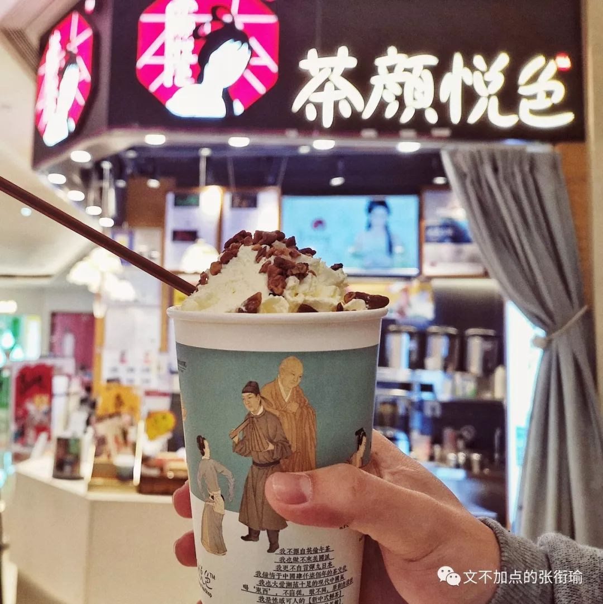
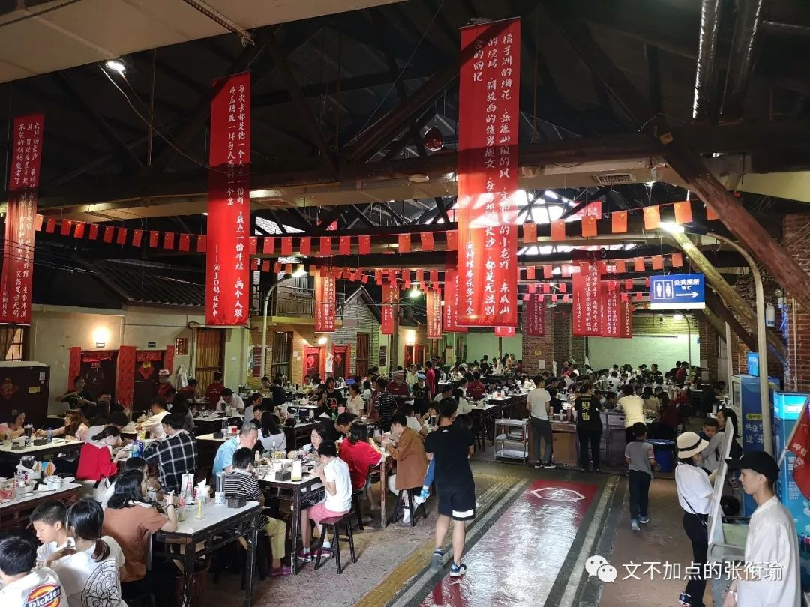
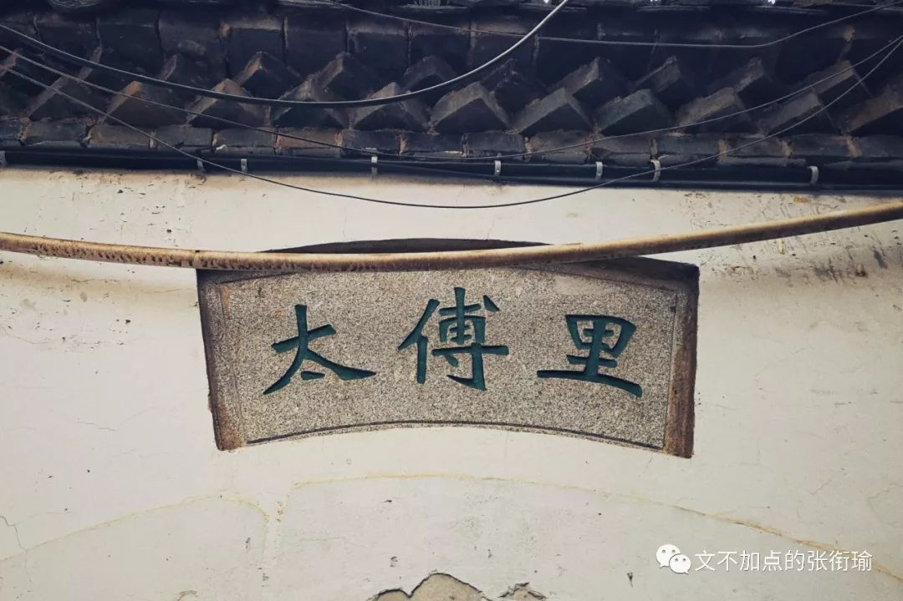

张衔瑜的第76篇推送
满屏的野兽派吃货图
非正常测评！！！
既然 越来越多的长沙人觉得老牌子倒了不好吃了 越来越多的朋友来问我到底长沙哪里好吃 那沫 本着 长沙人是检验臭豆腐的唯一标准 我决定叫上大胃王小伙伴阿喵亲自去重新测评以下店面(路边摊 看看到底哪家比较符合我们的口味
按照一般的科研思路而言 首先应该提出一个问题 问题已经在上面提出来了就是关于现在长沙小吃圈臭豆腐的品鉴 明确了实验目的 接下来就是实验原理 第一原理也已经提出来了 不管是哪家的臭豆腐 都应该由我们两位硬核长沙人来亲自尝过之后得到交叉检验 而在测评过程中 为了保证测评的准确性 我们决定模仿各种仪器分析比如分光光度计的实验原理
加入参比项 茶颜悦色的浓茶纯牛奶饮品

如果不知道参比的话 我简单说一下参比的原理 比方说去香水店 整个店里都是香水味的时候 让人闻香水把CK所有颜色都闻一遍
或者毒药海洋森林afterparty 连续不断 这时候不仅人的鼻子会疲劳 而且会导致上一种闻过的味道下一次还有不少的残留 一些店内的做法是放上一杯咖啡豆 这杯咖啡豆就是这家香水店的参比 因为咖啡豆无论是耶加雪啡还是最普通的蓝山 anyway只要是咖啡豆 那香味总是和香水之间差别很大的 那么当闻过一种香水之后 用咖啡豆来醒一下鼻子 相当于是从香氛的角度吧鼻子重新调零 这样闻到的下一种味道才是准确可信的 这就是香水店的咖啡豆参比
同理 我们在测评单上列了十几家臭豆腐 全部吃下来的话估计也会像闻了十几种香水一样 味觉功能紊乱 那么就也需要找到一种味觉上相对于臭豆腐的参比 按照经验规律 当吃一种很臭很辣的东西的时候 适合用带一点淡香然后有些甜的东西来作为调剂 所以我们有选用茶颜悦色作为我们的参比
原理部分差不多就这么多 接下来就可以开始进行测评然后记录测评结果啦（搓手手
未特别标识的话 长沙臭豆腐均价是10元6片
未注明是以前拍的图的话 那么都是这次由野兽张衔瑜修的
在正式开始测评以前 为了给张衔瑜在肚子里边垫一点东西 并良好地进入了测评状态 于是先去到了一家我家楼下的面馆里吃了一碗红烧肉带迅干所谓带迅干的意思大概就是干面 碱面落水即走 不带多少汤 我一直不是很懂为什么看起来也像是干面
武汉的热干面就会做成那个样子 调了一个野兽派的滤镜（其实有点点沙雕了
第一家来到的是太平街文和友 肉酱臭豆腐 感觉微微带酸 辣度符合一般长沙同学要求 肉酱的食味给予好评 豆腐质感比较细腻 文和友我以为是长沙从各个方面而言 都非常精致的一家
从臭豆腐本身来看 这家基本完全地发扬了一般臭豆腐给人最中肯的样子
满足了大部分人对于臭豆腐的想象 一口足够大的锅 古旧但又不失整洁的店面装饰 阿喵说这一家应该要数长沙所有家臭豆腐里 品牌效应做得最好的
我回想了一下我的几次拍图 包括我在2018年100图里提到的那一张全景 文和友作为长沙兴起的一个品牌 满足了所有想拿着这个品牌来标识自己能跟上潮流的全部想象
除了这次的之外 我还有一点之前拍的文和友的存图 文和友将大概二十年前长沙的样子赋到了海信广场的店里 从我到过这么多城市拍过好些街道来去品牌兴衰来看 文和友大概是把本地的文化 本地的场景 本地的食味融合到一起来 做得最好的一家 就算是挑剔如阿喵和我这样 过来也觉得没有什么做得缺漏的地方 反到显得古朴而不失精致 像化着若有若无淡妆的人 反而体现妆者的功力


顺着太平街一直走 太平街算是长沙最古老的一条街道了 按照历史文化索引的话 一条街上的全部是各种各样的古旧文化景点 现在来说 历史文化名城 或者缩小一点范围放到省会城市当中 都必然会有一条像这样的古旧街道 但有的城市里 已然成为不折不扣的商业街 长沙这条就不会 太平街是即算是长沙人也还会去逛一逛 能在街内吃点东西的去处 却不是像另一些某些我不点名的地方一般是为本地人嗤之以鼻的
陈嗲 陈嗲本人出克旅游哒吧... 如果不放香菜记得一定记得要跟老板讲!!!
老板怕不是看到我拿个手机在这边拍照觉得是要跟他家做广告了跟我放起一堆的香菜 端出来的时候我还在跟老板讲赶掉点香菜莫要辣么多 BTW汤也是真的多
这家就没有像文和友开始拍的里边看到的那样把所有的调料单开了来
除了香菜以外所有的酱都放在了一起 这家豆腐炸得比较枯 枯脆枯脆 外地人可能很难理解我在这里讲的一种焦枯感 其实是吃到嘴里了之后 觉得边角有近乎于平常在电饭煲底下烧成锅巴但又还没有到锅巴的那一层软酥近脆的样子
这一家我们给的评价是 更接近老长沙街头巷尾的味道 对于喜欢两吃的人来说
把炸得焦枯了的臭豆腐浸润到汤汁里之后 吸软了的话 椒盐味也还蛮感人的说
至于有人问我什么长沙以外地方的臭豆腐正宗不正宗 我就一句话统统不行 还有人我什么白色精品还有香豆腐吃得吃不得 我会讲碰哒你滴鬼 怕是要去乌干达的丛林里和大猩猩玩相扑看能不能让你的脑子清醒一点
黑色经典 你要恰莫子辣哇 (我回答in长沙话)中辣 but我觉得店老板跟我放了重辣qwq 不晓得是因为听见我讲的长沙话还是冇听清我讲的是中还是重（长沙话不区分平舌音和翘舌音z & zh 也不区分前鼻音和后鼻音 en & eng 所以是增和怎）总之黑色经典是我在测评当中吃到的最辣的一波！！！
一般的臭豆腐从锅里捞出来了之后 是在外面戳个洞然后往里面浇加酱料 在黑色经典感觉没有这么搞 像是直接往里面放辣椒酱辣妹子
可以说 吃完以后看到碗底就没有什么汤的残留 从蒜泥到香菜全是辣
但是拉得很正很实在 非常的感人也非常地友好 我的好朋友名叫阿喵 在吃这一片臭干子的时候有一颗辣椒被他直接吸到喉咙里面去了
在一顿狂咳的时候被老板diss问是不是常杀人？？？
黑色经典的豆腐倒是中规中矩 主要是酱料骇人但挺不错的
为了缓解阿喵同学的痛苦 我们沿着孚嘉巷走过了少许 看到一家应该是原先的鲁班庙旧址的地方 大概在后来却有私人住在了里边 再后来就是被立为不可移动的文保单位 上榜了若干长沙城的文保点和旅游点
我没有太看懂像这样的立一个旧址在这边的话 算一个什么事 只是圈定了一块地方贴一个市文保单位的牌子 但接下来私人在里边就还是私人在里边 人们想来看看这个点也只不过是门外贴的一个牌子上简要地说一下在《善化县志》或者别的什么记载里边有说起过这么一个庙
简介了鲁班的生平之后游客就只能绕着这边走走看看 没有其他可以瞻仰学习的来去 里边该挂年货的就还是挂年货
该停电动车的就还是停电动车
回到太平街的主街上 屈贾谊于长沙 非无明主 贾太傅的故居外 想了想我们没有再进去 随口背了一下可怜夜半虚前席 不问苍生问鬼神之类测测自己还能不能想起来的句子 有一下我想问阿喵是不是还能够背得过秦论的只言片语 默念了一下之后 我发现自己也就记得些席卷天下
楚有春申 销锋镝 仁义不失而攻守之势异也这样子的罢辽

走过三王街 就到了长沙又一条我吃了快二十年也没有全部吃干净的坡子街上
拿到一杯新的参比茶颜悦色桂花弄之后 我们开始测评四娭毑臭豆腐的三王街店 吃的时候并未蘸汤但依然有很重的酱味 类似劣质常德鸭霸王??? 酱味???过浓 用的酱不像是能够给人吃的 反倒像是用来上色的那种酱料 给人的感觉就是四个字 莫名其妙 虽然这家可以有十块钱七片好像貌似比别家的要多一片 但我第二片吃完了之后 没吃完就连碗带签字一起丢掉了
四娭毑三王街店的味道略带复古风但不够像 差评 如果第一次吃长沙臭豆腐吃到的是这一家 我想那大概是会对长沙臭豆腐印象极差了 包括我自己都想象不到 一家老牌可以说风评在老长沙的口中极好极好的臭豆腐在开了这家之后怎么会堕落成这个样子
事实上我在吃这家以前也有去过大众点评 美团 包括高德在变换算法后引的那些评论我都看了 大概是除了洗地的评论之外 其他的就是真实对这家很耿直而切实的评论他家真的不好吃了
小制 奇臭
第一家可以明明白白吃出臭味的 豆腐相对最为软型（就类似于真的吃到了平常正常情况下的豆腐那种但是只是外表变成了白色而已） 真的是臭味qwq 不是那么好接受 没吃完就丢第二家 不知道为什么连续的两家都会是这个样子
武爹的老板貌似没有开张 一个人躲在自己的摊子后边像在吃什么酱板鸭鸭霸王之类的小吃 其实大概在去年还是前年某一次同学聚会的时候 我们也跑到这个拐角里面来吃过这一家 也是不想排外面队的权宜之计 基本没有什么令人惊艳的地方 一般般罢辽
火宫殿 虽然一直以来对火宫殿小吃的印象就不好 但怎么说也是在长沙历史上我的认知历史当中和玉楼东处在同一历史层级上的餐馆 讲道理 无论要不要测评 火宫殿都是绕不开的一家

真实吃到的时候 火宫殿无疑是配料最足的原味臭豆腐 玉米面 豆瓣酱 花生米 萝卜干 葱青菜 有点类似于一餐两吃 纸碗也很复古 如果想感受自己撕开臭豆腐的仪式感可以选这个
是唯一没有戳破洞的一家臭豆腐 倒是和以前一样的在味觉评价当中处在中下的感觉 这里我倒是和阿喵出现了一点点分歧我觉得就算是自己把豆腐的表皮戳破然后在把汤汁酱料灌进去也感觉没有很吃出来臭豆腐的味道 不过阿喵指出火宫殿应该可以适合已经对咸口酱料这些的没那么大要求的老年人 就是这种真实的原味的感觉 也还可以
看了看也不光在卖臭豆腐 包括红油猪蹄 长沙口味虾虾尾之类的也有在同一个窗口给出来 可以说在吃到火宫殿这一家的时候 从老食客的角度看起来 我觉得是可以很明显地能够从足足的配料这些的感觉到火宫殿有想在作为一家餐饮和文化场馆来对自己的品牌进行一次拯救
一次复兴 在各个细节上都还是能看得到努力和下功夫的痕迹 但也正如火宫殿实际配给食客的是一把黑色的小塑料叉子而不是像外边一样的竹木签子一样 火宫殿看起来就像是脑子里有在想要把自己变得越来越好
但只是有想法却没有人知道应该怎么实施得好实施得完全 最后我还是用了别家的竹木签子来戳着臭豆腐吃
却并没有用着这家的黑色塑料叉子因为既戳不破不够硬 又没有老长沙一般的那种怀旧感觉
所以在火宫殿我有想了一些关于火宫殿本身 在以前取得的巨大成就和老一辈的荣光的时候 经历了一段时间也许是迷失然后所有人都觉得火宫殿实在是越来越难吃了之后 貌似我看到了一点点有反省有想把自己品牌做好一点点的迹象 如果研究起火宫殿的品牌发展进程的话 然后找找真正有做过品牌运营并且对相关规律熟悉的人来救一救或火宫殿
应该是很不错也很棒的一件事情
仍然在坡子街的不远处 是一家叫罗记的臭豆腐点 虽然已经吃到第七家了
但确实还不错 之所以这么晚 是因为这一家的锅太小了 每一次都只能出两碗出来 给人的感觉像是这个师傅没有很用心在炸臭豆腐但实际上应该兼有让大家排队和保持品牌质量的考虑吧
炸臭豆腐的师傅配合我的出演 我说要在哪里踩一jio 他就在哪个动作上停顿一下
反正是一筐臭豆腐炸起出来 也没有像以前小时候在校门口 看到有些师傅是先炸了很多片放到一个小筐里
然后等到小学生们上学放学的时候就现炸一点然后又从冷的那边拿一点来回一下锅 有时候再顺便加一碗放了芝麻花生的刮凉粉基本上就已经是小时候自己很开心也很令同学羡慕的样子了
综合评价来看 豆腐很软但不失焦枯感 没有杂七杂八的调料花脚乌龟 直接就是调好的辣椒油+萝卜干 吃到嘴里的感觉让我们一致地给了这家给好评 倒不是因为排队很久 是因为吃了这么多家 已经知道我们看中臭豆腐 也懒得从什么品牌运维之类的考虑来去 是真真正正吃到我嘴里的是不是那么一回事 到了罗记我们就说 嗯 确实是这么一回事 就好了
我有一下的冲动是去新华楼里边 吃一碗杂酱刀削面和一小碟黄金糕来作为参比 但阿喵说想去双燕楼吃点馄饨 我知道如果妥协了的话我们的最终结果有可能是去向群锅饺或者去热卤刘里边开始一撮一撮热卤地尬吃尬喝 但我又实在是吃不下了 于是拍拍照就溜了溜了
到长郡门口买参比的时候 觉得已经吃得实在是太撑了已经完全吃不下了 需要一点点别的东西来洗刷一下自己的味觉 这大概是我能数的出来的在知乎茶也买半糖的纯茶 据说换成塑料杯的话 装起来不太好看 于是店员仍旧给我用茶颜标配的纸杯装了下
在文庙坪街巷里尬走的时候 我问了阿喵一个问题 你觉得住在这里怎么样 阿喵稍稍有些犹豫 然后说 如果把我住到一个比较好的地方住很久 然后再回到这里来 那也还要得 但是如果一直住在这里 那还是要不得 不过我倒是觉得还好 越是人多越是挤密阿密的这种鱼龙混杂的交错纵横难解难分的样子 越是对我而言宜居的地方 正如在校科研或者以前主要精力在做文字工作的时候 我的能力就在于能从没有时间的地方挤找时间出来 从蚊子的脚上割肉下来 倒是有一整段整块的给我 反而发挥不出来我的特长
端着茶颜走进南门口菜市场去找 我记得小时候确实有一家高爹就摆在南门口正门口 那时候经过这边就要老爸在稍微前面一点的地方停一下 然后我拿着五块钱跑去买一个塑料碗装着的几片臭干子回来
南门口菜市场还有几家好吃的 就是葱油粑粑和糖油粑粑
糖油粑粑一定要吃这家心太软 然后葱油粑粑貌似在牌子上写了正宗湘潭blah之类的字样 顺着走看到了很多买卖年货 各种辣椒的店面 看起来就全部简单直白地写着湘菜诱惑 我不会说我在这里的时候把洋姜认成了嗦螺被阿喵嘲笑了好久好久就像我嘲笑他吃黑色经典被呛到一样
如果只论豆腐的话 另一种做法是制成香干 长沙有一些老字号比如九如斋的麻糖
杨明远的眼镜 杨裕兴 无名粉店 甘长顺 黄春和 又一村 德园 这些吃东西的去处 以及养天和 九芝堂这样的药铺 玉和醋这样的看名字就知道是什么 关于香干的这一家叫做德茂隆 同样的中华老字号 湖南老字号 之前大概有不少的报道说长沙一些个地方在香干上写了“德”字的并不是真正的德茂隆 idk 但开在南门口菜市场里的 应该骗不了这些拉着小拖车过来的真实选手吧
以及一些随手记录 虽然在南门口菜市场就在心太软糖油粑粑旁边也看到了一家四娭毑
推车推出来的话看起来如果在平常话我是有可能去买上一些的 但今天实在是对之前的四娭毑心有余悸太难吃了
于是溜了溜了
找到这家叫五娭毑的店面 就在居民楼下 从食味到环境 都给人一种怀旧的感觉 酱味依旧浓厚 辣度中般子 吃过参比之后 阿喵第一口下去觉得觉得咸味很重
不过后来也好了 豆腐焦脆但并不厚 酱味和所有之前吃到的那些妖艳贱货或者是四娭毑小制那样的尬臭酱油都不一样
就是简单普通最直达人心的怀旧龙牌酱油味 适应了之后 这应该算是真的老长沙味道 十元八片 老板方便地改成五元四片
我把臭豆腐端上桌了来 桌子用长沙话说叫做油麻令光 盘子上用塑料袋包着 那么之后就可以只用把塑料袋拿去扔了盘子继续用罢

签子用水泥墙的背景拍出来 修一下颜色 也很怀旧
整个这家店就是在居民们要出去的楼道里 老板不时地和从楼上下来的同楼栋住户打一打招呼 今里是补习班最后一天哒不咯 出克买菜肥来哒咯 感觉就像很小的时候也是类似的筒子楼附近摆摊卖臭干子的人
对每一个会经常或者偶尔到自己摊子上来买东西吃的人都很熟悉 时不时说说最近的情况 一边炸着臭豆腐一边策些七里八里的 现在想想 以前除了剪头发的师傅 最知道些邻里gossip的大概就是这样要稍稍等一下炸出来但是又人人都喜欢的小吃店店主吧
走出门了之后阿喵去找参比 但是拐进了一家长沙手作工坊里 老板在卖桂花年糕和果饭 我以前是吃过果饭的但是不太习惯 记得有一段时间我超想吃灯芯糕但是跑了几家都没有
这次又是一进门就闻到的桂花年糕上的灯芯糕味道但老板说这里不卖qwq idk 阿喵说这个最好的办法是在早上吃的时候蒸一下下让水分饱和
配上一碗软糯的甜酒应该是贼棒的选择 这一段就credit
to 阿喵
我们本来也还种草了一家在岳麓山东方红广场那边 从自卑亭和湖大曾宪梓楼一直上去的期房 登高路47号一家叫金鼎的臭豆腐店 到了之后似乎没有找到呢 顺手想抓一张将进酒 卑莫停的自卑亭
看是不是能把后边的湖南大学图书馆构到一张图里去 但最后只是这个样子 那就没办法直接地判断到底是湖南大学中南大写还是东南大学了
但登高路上还着实有几家在 和阿喵看了看 我问 还吃吗 阿喵说 不吃了不吃了我们上山走走算了吧 于是溜上爱晚亭然后顺着岳麓书院的几道围墙一直走下来
测评的过程和基本的结论也就描述完全了呢
高嗲 金鼎 李四姐 404 not found
半截人 西施 下岗牌 成师傅 就没有去找了
还有一个叫姜爹爹 后来在回去的路上看到了 但是一停下来就实在是不想吃了
蓉园宾馆还是九所那边听说也有好吃的臭豆腐 不过不想偷渡省委还是不要了
按照科研流程的话 这一步应该要做一下实验的主要结论了呢
从硬核长沙人 左家塘阿喵和荷花园衔瑜的描述来看
第一类是推荐长沙本地人去吃的 本地人的特点是怀旧以前小时候的味道 而且对一些小巷子有着纯熟的寻找技巧 并且对环境的要求不那么高而又能以一口流利的长沙话与店主交流 这时候的推荐应该是 第一类的第一推荐就应该是南门口地铁站往南不远的居民楼下过道里 五娭毑臭豆腐 并列推荐是考虑大家比较容易找 那就还是黑色经典因为够辣 夹在第一类和第二类中间的是小吃上中规中矩的文和友 因为文和友从文化建设上的品牌运营来看 我们长沙人本来就是这些文化的创造者 这就和自己家一样无足为奇 考虑到罗记陈嗲 一个存在排队不友好的情况 一个过于焦枯的样子 我觉得还是放在第一类的第二推荐 火宫殿姑且能放到第三推荐 这也是看在有在自救的面子上
第二类是推荐给外地人刚刚到长沙想去吃本地特色的 特点是对排队这件事有着极高的容忍度并且对一些细微的味道把握不精纯 喜欢能一并欣赏一些本地特色的去处 并且对于湖南的长沙的这种湘菜辣法很难接受 长期在湖南或者长沙以外被川渝麻辣和北方酸辣菜系欺骗为湘菜香辣的时候 那这样的第一推荐应该是文和友 第二是黑色经典 罗记 毕竟一个太辣 一个还是太难排队 火宫殿因为品牌和文化特色勉强能算到第二类里面来 第二类也还可以追加一个是陈嗲 只是因为在太平街上 没有别的 我倒是很难界定五娭毑在这里边的地位 如果是愿意在一个城市去感受一些真正像是居民生活和文化的人来长沙 我会选择性地推荐一下五娭毑但大概率也是我自己带着去才有可能 一般的话 我应该是不会提起这一家 毕竟很多人也没有深度文化游的要求 不过是把旅行当成换了一个城市的消遣 把思考当成以后颐养天年的时候才有闲心去的放松活动
然后就是不推荐的 不推荐四娭毑 不推荐小制 其他的我没有去吃因为实在吃不下了 不予置评
For the native: 五娭毑≈黑色经典>罗记≈文和友≈＞陈嗲>火宫殿
For visitors: 文和友>黑色经典≈罗记＞火宫殿≈陈嗲#五娭毑？？？
声明：≈＞ 这个符号的意思是有点点大于但又大于不那么多 可以理解为lim大于的那一边接近但是有没有lim那么多
晚上消食的时候 我依旧发挥爬楼重症患者的医药素养 找到有眼缘的楼栋上去闯一闯 在这张图里 由近及远依次是南门口 西湖路 文庙坪 古潭街 杜甫江阁 湘江 橘子洲 桃子湖和没有亮灯但依旧可以辨识出来的岳麓山天际线 下面给到的两张分别是我的第一修和第二修 二修是参考图虫上一些拍黑金城市的大神的修图方式 只留下车轨划过之流 鎏金的部分再闪着暗黑但是稳重的黑金色彩
看到的是整个长沙老城区的模样 文夕大火之后建起来的部分 也是已然错落成了这般模而又从拆迁大潮中保留了下来 换一换角度是长郡中学校门前的上坡 视角里甚至可以很清楚地看到长郡的教学楼 宿舍以及体育场
回头不过城南路 沿着视线方向上行 是原来长沙城的制高点天心阁 画面右侧的圆形转盘模样则是我在湘江水逝楚云飞里拍到的摩天轮 旁边也就是国足福地长沙贺龙体育馆
从不一样的角度来看到同一座城市 正如我待了这么久之后 出去过 回来了 在人民路上重新审视我所见到的诸般长沙文化以及随街见到的美好和瑕疵 我自己的一点感受是 在走出去和回来之后 就越发可以很中肯但又不失情感地来看待一件事情 就比如这次测评臭豆腐 虽然所有的测评结果都是主观做出来的 但我和阿喵在评价的时候是有遵循自己味觉给出的反馈
这是真实中肯的 而我们之所以来做这件事
来吃吃喝喝 却是源自我们自己迫切地想知道结果 想知道这里边哪里好不好 到底是怎么来的
走到黄兴路的末端 依旧上天入地 说来熙熙攘攘
长沙城内来去 我们也只是自幼生长在这一片地方 然后道听途说 历史书也好 影视作品也好
家里巷尾听人正式地不正式地谈起这座城市 庆幸的是多往外面走 也多多回来看 事实上也更好地让人能变换视角地看待自己所处的城市以及位置
新闻的情感 是在镜头之后的 镜头本身没有情感 镜头像是新闻记者的专业素养在如何客观而真实地描述一件事情 但拿着镜头的人 记述这件事情的记者在做着这件事情的时候 内心也许可以是炽热的
长沙小吃圈的何去何从 现在有没有开花 离不开诸多品牌的运维和自身的做大做强 细化到一样小吃本身 我很庆幸我们依旧能种草这么多家并且最后还吃不完 还可以很真切地对小吃进行评价
看到有一些在下沉有一些在上升 这或许是一座城市从饮食管窥到的保持活力的体现吧
最后的一点参比出镜 来自无名粉店的香菜牛肉扁粉

统计数据：
本文共计7740个字 按动快门288次 选图103张 和阿喵种草14家路上看到13家吃了8家一共75元臭豆腐 参比买了红烧肉带迅干+三杯茶颜桃李卡折后+糖油粑粑+桂花年糕+夜宵原汤肉丝粉一共74.8元 出门公交10.8元
声明：
本文纯属作者和玩得好的吃货日记
推荐也仅限自己的朋友
与任何品牌没有任何经济往来
感谢小伙伴阿喵一路测评（撒花
-END-
-留下尬走的足迹-
-长沙攻略-